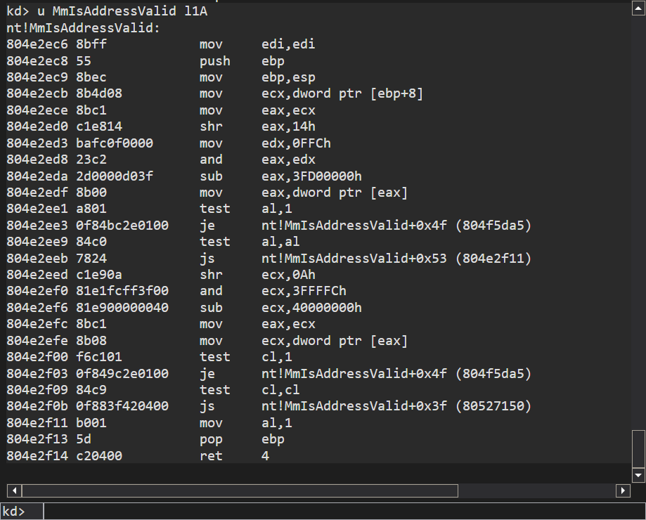
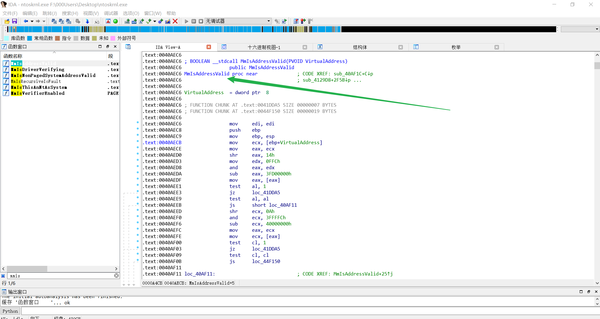
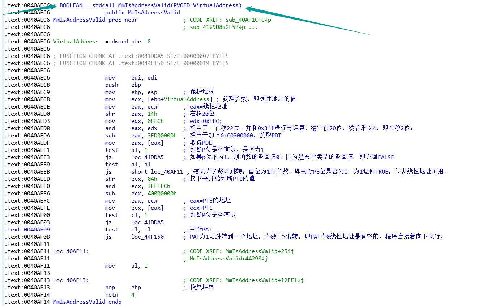

# 逆向分析 MmIsAddressValid 函数
# 找到 MmIsAddressValid 函数
方法一：在 windbg 中输入 u MmIsAddressValid l1A

方法二：在 c:\windows\system32\ 中找到内核程序，用 IDA 分析。
ntkrnlpa.exe 2-9-9-12 分页内核
ntoskrnl.exe 10-10-12 分页内核
打开 ntoskrnl.exe 后，加载 pdb 文件，即可查看函数名称。

# 分析代码
分析前，先聊聊函数头的 MOV EDI,EDI 指令。这条指令看起来什么也没做，但是很多系统函数开头都有这条指令，why？其实这是为了实现对函数行为的动态修改（热补丁），可以一下这篇文章 函数开始处的 MOV EDI, EDI 的作用

函数主要是检测 P 位是否有效。
PAT 还没学，就不多逆了。
# 总结
学习操作系统的汇编算法。
# Reference
https://blog.csdn.net/Kwansy/article/details/108945068